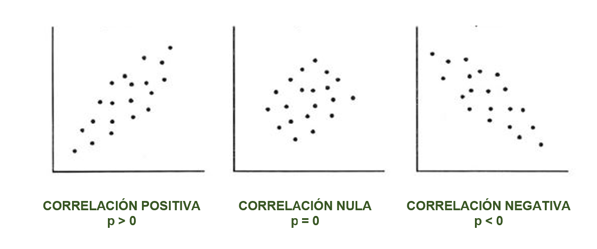

Práctica dirigida 9

FACULTAD DE CIENCIAS SOCIALES - PUCP
Curso: POL 278 - Estadística para el análisis político 1 | Semestre
2023 - 1
Diagramas de dispersión y Correlación
Ideas clave
La correlación es en esencia una medida normalizada de asociación o covariación lineal entre dos variables.
La correlación es una medida de la relación (covariación) entre dos variables cuantitativas.
La manera más sencilla de saber si dos variables están correlacionadas es determinar si co-varían (varían conjuntamente).
Es importante hacer notar que esta covariación o relación no implica necesariamente causalidad: La correlación puede ser fortuita, como en el caso clásico de la correlación entre el número de venta de helados e incendios, debido al efecto de una tercera variable, la temperatura ambiental. A este tipo de relación se le llama “espuria”.
Coeficiente de Correlación de Pearson
“El Coeficiente de Correlación de Pearson es un estadístico paramétrico, pues se asume que ambas variables tienen una distribución aproximadamente normal, o sea, distribución normal bivariante”.
Es una medida que puede variar entre -1 y +1, ambos extremos indicando correlaciones perfectas, negativa y positiva respectivamente.
Un valor de r = 0 indica que no existe relación lineal entre las dos variables.

Supuestos
- Normalidad = Teorema Central del Límite plantea que, en la medida que nuestro marco muestral es suficientemente grande (mayor a 121 casos), la variable aleatoria se aproxima a un comportamiento normal.
Gráfico de dispersión

Otros ejemplos:

Aplicación práctica
Vamos a analizar la relación entre el voto a Pedro Castillo y el Índice de Desarrollo Humano (IDH).
El IDH es un importante indicador del desarrollo humano que elabora cada año el PNUD. Se trata de un indicador que, a diferencia de los que se utilizaban anteriormente que medían el desarrollo económico de un país, analiza la salud, la educación y los ingresos.
Pueden encontrar más información sobre este índice aquí: https://hdr.undp.org/data-center
Los datos que analizaremos se encuentran a nivel de provincia, pero pueden encontrar el IDH desagregado incluso a nivel de distritos.
Variables:
- PL: Porcentaje de voto a Pedro Castillo (Perú Libre) en segunda vuelta de las elecciones presidenciales 2021
- habitantes: Número de habitantes por provincia
- esperanza: Esperanza de vida al nacer
- secundaria: Población (18 años) con educación secundaria completa
- educación: Años de educación (población de 25 a más)
- ingresos: Ingreso familiar per cápita
- IDH: Índice de Desarrollo Humano, en una escala de 0 a 1
Cargamos nuestra base de datos:
library(rio)
data = import("Data Provincias.xlsx")
head(data)Ejercicio 1: Relación entre el voto a Pedro Castillo y el IDH
Paso 1: Exploramos variables de interés
Voto a Pedro Castillo:
str(data$PL)Análisis descriptivo:
library(tidyverse)
data %>%
summarize(Min = min(PL),
Media = mean(PL),
Mediana = median(PL),
Max = max(PL))IDH:
str(data$IDH)Análisis descriptivo:
data %>%
summarize(Min = min(IDH),
Media = mean(IDH),
Mediana = median(IDH),
Max = max(IDH))Paso 2: Gráfico de dispersión
Visualizamos la relación entre dos variables cuantitativas. Esta “nube” de puntos en el gráfico de dispersión nos da una idea visual (preliminar) de la probable relación entre las variables.
ggplot(data, aes(x=PL, y=IDH)) +
geom_point(colour="red") + xlab("Índice de Desarrollo Humano") + ylab("% voto a Pedro Castillo") +
ggtitle("Relación entre el IDH y el voto a Castillo") +
theme_light()¿Qué nos indica el gráfico? ¿Existirá correlación? ¿Con qué fuerza? ¿Qué sentido?
Paso 3: Correlación
Dos hipótesis:
- H0 = No existe correlación entre el IDH y el % de voto a Pedro Castillo
- H1 = Sí existe correlación entre el IDH y el % de voto a Pedro Castillo
#Prueba de correlación
cor.test(data$PL, data$IDH)- p < 0.05 Rechazas la H0/Aceptas la H1 (sí hay correlación)
- P > 0.05 Aceptas la H0/Rechazas la H1 (no hay correlación)
¿Qué nos dice el resultado? Interpretación: Dado que el p-valor es menor a 0.05, no hay suficiente evidencia estadística para aceptar la H0. Por lo tanto, aceptamos la H1 de que “Sí existe correlación entre el IDH y el % de voto a Pedro Castillo”.
El coeficiente es de -0.43 lo que quiere decir: (i) Se trata de una “correlación negativa”; es decir, relación indirecta (-) y (ii) Según los criterios de Cohen (1988), se trata de una correlación mediana.
Ejercicio 2: Relación entre el voto a Pedro Castillo y los ingresos per cápita
Paso 1: Exploramos variables de interés
Ingresos per cápita:
str(data$ingresos)Análisis descriptivo:
data %>%
summarize(Min = min(ingresos),
Media = mean(ingresos),
Mediana = median(ingresos),
Max = max(ingresos))Paso 2: Gráfico de dispersión
ggplot(data, aes(x=PL, y=ingresos)) +
geom_point(colour="red") + xlab("% voto a Pedro Castillo") + ylab("Ingresos per cápita") +
ggtitle("Relación entre los ingresos per cápita y el voto a Castillo") +
theme_light()¿Qué nos indica el gráfico? ¿Existirá correlación? ¿Con qué fuerza? ¿Qué sentido?
Paso 3: Correlación
- H0 = No existe correlación entre los ingresos per cápita y el % de voto a Pedro Castillo
- H1 = Sí existe correlación entre los ingresos per cápita y el % de voto a Pedro Castillo
#Prueba de correlación
cor.test(data$PL, data$ingresos)¿Qué nos dice el resultado?
Ejercicio 3: Relación entre el voto a Pedro Castillo y el acceso a educación secundaria
Paso 1: Exploramos variables de interés
Educación secundaria:
str(data$secundaria)Análisis descriptivo:
data %>%
summarize(Min = min(secundaria),
Media = mean(secundaria),
Mediana = median(secundaria),
Max = max(secundaria))Paso 2: Gráfico de dispersión
ggplot(data, aes(x=PL, y=secundaria)) +
geom_point(colour="red") + xlab("Acceso a educación secundaria") + ylab("% voto a Pedro Castillo") +
ggtitle("Relación entre el acceso a educación secundaria y el voto a Castillo") +
theme_light()¿Qué nos indica el gráfico? ¿Existirá correlación? ¿Con qué fuerza? ¿Qué sentido?
Paso 3: Correlación
- H0 = No existe correlación entre el acceso a educación secundaria y el % de voto a Pedro Castillo
- H1 = Sí existe correlación entre el acceso a educación secundaria y el % de voto a Pedro Castillo
#Prueba de correlación
cor.test(data$PL, data$secundaria)¿Qué nos dice el resultado?
En el ejericicio anterior, nuestro p= 0.14, el cual es mayor a 0.05. Por ello, no se puede rechazar la H0 y, por el contrario, se debe concluir que no existe una correlación entre el acceso a la educación secundaria y el % de voto a Pedro Castillo.
Ejercicio 4: Relación entre el voto a Pedro Castillo y la esperanza de vida
Paso 1: Exploramos variables de interés
Esperanza de vida:
str(data$esperanza)Análisis descriptivo:
data %>%
summarize(Min = min(esperanza),
Media = mean(esperanza),
Mediana = median(esperanza),
Max = max(esperanza))Paso 2: Gráfico de dispersión
ggplot(data, aes(x=PL, y=esperanza)) +
geom_point(colour="red") + xlab("Esperanza de vida") + ylab("% voto a Pedro Castillo") +
ggtitle("Relación entre la esperanza de vida y el voto a Castillo") +
theme_light()¿Qué nos indica el gráfico? ¿Existirá correlación? ¿Con qué fuerza? ¿Qué sentido?
Paso 3: Correlación
- H0 = No existe correlación entre la esperanza de vida y el % de voto a Pedro Castillo
- H1 = Sí existe correlación entre la esperanza de vida y el % de voto a Pedro Castillo
#Prueba de correlación
cor.test(data$PL, data$esperanza)¿Qué nos dice el resultado?